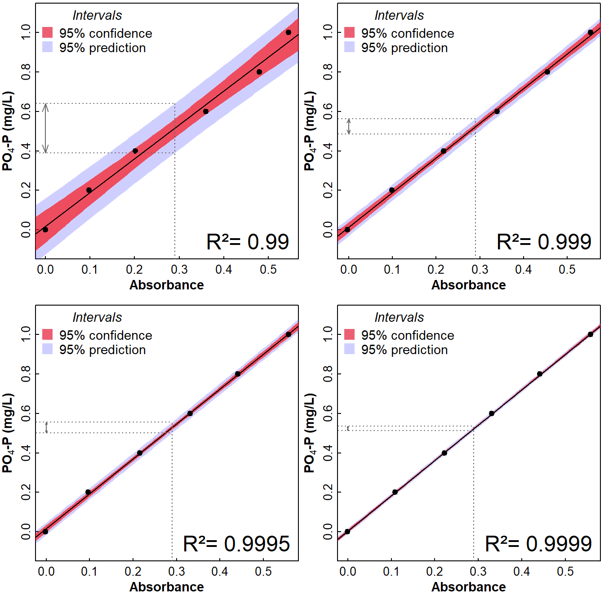
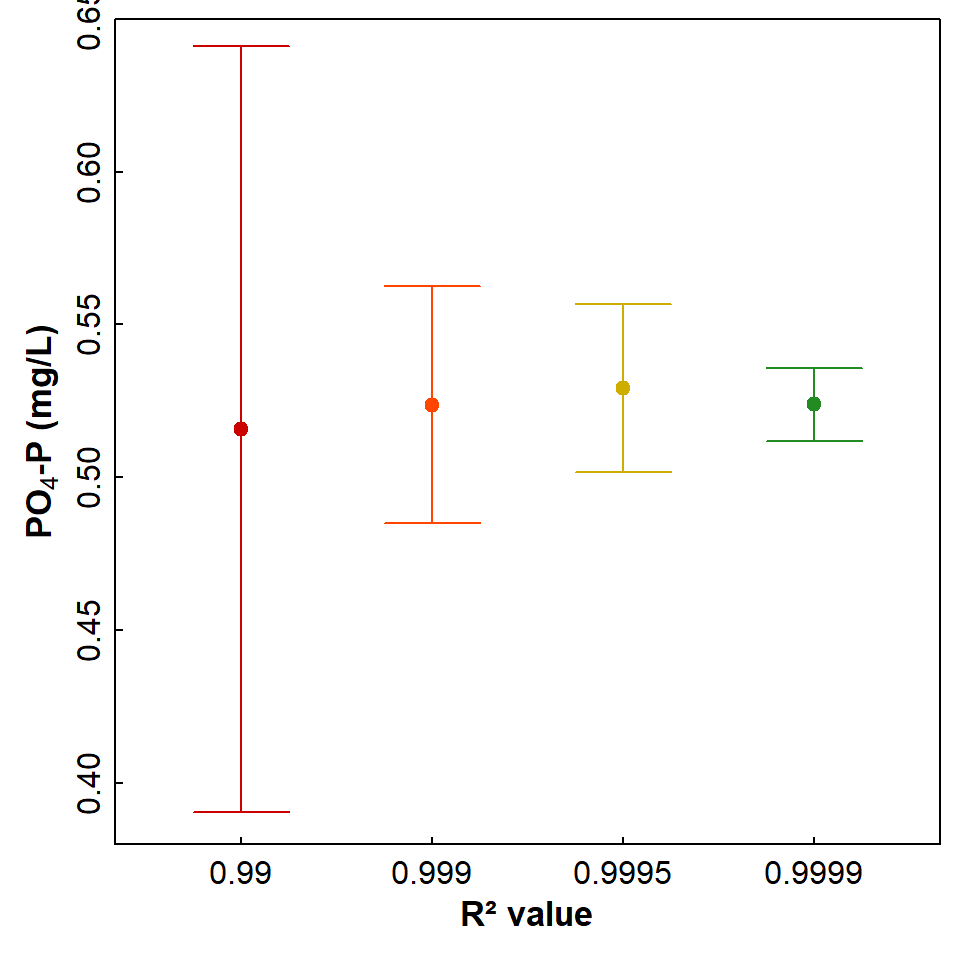

If you do any lab classes involving analytical chemistry, at some stage your instructor will probably emphasise the importance of a highly linear calibration. This example shows, for calibration data from a commonly-used spectrophotometric method in environmental science, how confidence intervals and prediction intervals for regression depend a lot on how linear the calibration is.
We choose a spectrophotometric method as an example, since the calibration should theoretically be a linear function of UV-vis absorbance dependent on analyte concentration, based on the Beer-Lambert Law (Clark, n.d.). The specific method this example relates to is the determination of phosphate in water by the ascorbic acid-antimonyl-molybdate (“molybdenum blue”) colour reaction, first described by Murphy and Riley (1962). The molybdate reagent reacts with free phosphate ions in water in the presence of a reducing agent (ascorbic acid plus antimonyl compound) to produce a blue-coloured complex, the absorbance of which is measured at about 880nm and which is linearly related to phosphate concentration.
We argue that only r-squared > 0.999 is likely to give acceptable prediction intervals when the calibration line ("curve") is interpolated to calculate phosphate concentration in unknown water samples. Let's see what the data say...
We first read some calibration datasets, which are reasonable for the phosphate method, but which we have created to have specific R² values for linear regression.
## PO4.P Abs.99 Abs.9990 Abs.9995 Abs.9999
## 1 0.0 0.000 -0.003 -0.002 -0.001
## 2 0.2 0.098 0.099 0.097 0.109
## 3 0.4 0.202 0.217 0.216 0.222
## 4 0.6 0.360 0.339 0.331 0.331
## 5 0.8 0.480 0.454 0.441 0.441
## 6 1.0 0.545 0.553 0.558 0.558In these data, PO4.P is the concentration of phosphate
expressed as mgP/L, and the columns prefixed Abs are for
calibarations with R² = 0.99, 0.999, 0.9995, and 0.9999.
We then plot these data with their linear regression lines, 95% confidence intervals, and 95% prediction intervals. The Beer-Lambert Law has absorbance dependent on concentration but, to show the prediction intervals, it makes sense to plot concentration as a function of absorbance.
namz <- colnames(clines)[2:5]
# make a data frame containing a sequence of concentrations to plot intervals
newAbs <- data.frame(Abs.99=seq(-0.1,0.66,0.01),Abs.9990=seq(-0.1,0.66,0.01),
Abs.9995=seq(-0.1,0.66,0.01),Abs.9999=seq(-0.1,0.66,0.01))
par(mfrow=c(2,2), mar=c(3,2.5,0.25,0.25), mgp=c(1.3,0.2,0), tcl=0.2,
font.lab=2)
# R-sq = 0.99 -=+=-=+=-=+=-=+=-=+=-=+=-=+=-=+=-=+=-=+=-=+=-=+=-=+=-=+=-=+=-=+=-
calib.99 <- lm(PO4.P ~ Abs.99, data=clines)
conf0 <- predict(calib.99, newAbs, interval = "conf")
pred0 <- predict(calib.99, newAbs, interval = "predict")
plot(calib.99$model[,1] ~ calib.99$model[,2], ylim=c(-0.1,1.1),
type="n", cex.lab=1.1, cex.axis=1,
xlab="Absorbance", ylab=expression(bold(paste(PO[4],"-P"," (mg/L)"))))
polygon(c(newAbs$Abs.99,rev(newAbs$Abs.99)), c(pred0[,2], rev(pred0[,3])),
col="#4040ff40", border="transparent")
polygon(c(newAbs$Abs.99,rev(newAbs$Abs.99)), c(conf0[,2], rev(conf0[,3])),
col="#ff0000a0", border="transparent")
abline(calib.99)
points(calib.99$model[,1] ~ calib.99$model[,2], pch=19)
mtext(paste("R²=",round(summary(calib.99)$r.sq,4)), side=1, line=-1.5, adj=0.95,
cex=1.5)
legend("topleft", bty="n", legend=c("95% confidence", "95% prediction"), cex=1.1,
title=expression(italic("Intervals")),
col=c("#e00020a0","#4040ff40"), pch=15, pt.cex=2, y.int=0.9)
lines(rep(newAbs[40,1],2),c(par("usr")[3],pred0[40,3]), lty=3, col="dimgrey")
lines(c(par("usr")[1],newAbs[40,1]), rep(pred0[40,3],2), lty=3, col="dimgrey")
lines(c(par("usr")[1],newAbs[40,1]), rep(pred0[40,2],2), lty=3, col="dimgrey")
arrows(0,pred0[40,2],0,pred0[40,3], col="dimgrey", length=0.1, angle=20, code=3)
# R-sq = 0.999 -=+=-=+=-=+=-=+=-=+=-=+=-=+=-=+=-=+=-=+=-=+=-=+=-=+=-=+=-=+=-=+=-
calib.999 <- lm(PO4.P ~ Abs.9990, data=clines)
conf0 <- predict(calib.999, newAbs, interval = "conf")
pred0 <- predict(calib.999, newAbs, interval = "predict")
plot(calib.999$model[,1] ~ calib.999$model[,2], ylim=c(-0.1,1.1),
type="n", cex.lab=1.1, cex.axis=1,
xlab="Absorbance", ylab=expression(bold(paste(PO[4],"-P"," (mg/L)"))))
polygon(c(newAbs$Abs.9990,rev(newAbs$Abs.9990)), c(pred0[,2], rev(pred0[,3])),
col="#4040ff40", border="transparent")
polygon(c(newAbs$Abs.9990,rev(newAbs$Abs.9990)), c(conf0[,2], rev(conf0[,3])),
col="#ff0000a0", border="transparent")
abline(calib.999)
points(calib.999$model[,1] ~ calib.999$model[,2], pch=19)
mtext(paste("R²=",round(summary(calib.999)$r.sq,4)), side=1, line=-1.5, adj=0.95,
cex=1.5)
legend("topleft", bty="n", legend=c("95% confidence", "95% prediction"), cex=1.1,
title=expression(italic("Intervals")),
col=c("#e00020a0","#4040ff40"), pch=15, pt.cex=2, y.int=0.9)
lines(rep(newAbs[40,1],2),c(par("usr")[3],pred0[40,3]), lty=3, col="dimgrey")
lines(c(par("usr")[1],newAbs[40,1]), rep(pred0[40,3],2), lty=3, col="dimgrey")
lines(c(par("usr")[1],newAbs[40,1]), rep(pred0[40,2],2), lty=3, col="dimgrey")
arrows(0,pred0[40,2],0,pred0[40,3], col="dimgrey", length=0.05, angle=20, code=3)
# R-sq = 0.9995 -=+=-=+=-=+=-=+=-=+=-=+=-=+=-=+=-=+=-=+=-=+=-=+=-=+=-=+=-=+=-=+=-
calib.9995 <- lm(PO4.P ~ Abs.9995, data=clines)
conf0 <- predict(calib.9995, newAbs, interval = "conf")
pred0 <- predict(calib.9995, newAbs, interval = "predict")
plot(calib.9995$model[,1] ~ calib.9995$model[,2], ylim=c(-0.1,1.1),
type="n", cex.lab=1.1, cex.axis=1,
xlab="Absorbance", ylab=expression(bold(paste(PO[4],"-P"," (mg/L)"))))
polygon(c(newAbs$Abs.9995,rev(newAbs$Abs.9995)), c(pred0[,2], rev(pred0[,3])),
col="#4040ff40", border="transparent")
polygon(c(newAbs$Abs.9995,rev(newAbs$Abs.9995)), c(conf0[,2], rev(conf0[,3])),
col="#ff0000a0", border="transparent")
abline(calib.9995)
points(calib.9995$model[,1] ~ calib.9995$model[,2], pch=19)
mtext(paste("R²=",round(summary(calib.9995)$r.sq,4)), side=1, line=-1.5, adj=0.95,
cex=1.5)
legend("topleft", bty="n", legend=c("95% confidence", "95% prediction"), cex=1.1,
title=expression(italic("Intervals")),
col=c("#e00020a0","#4040ff40"), pch=15, pt.cex=2, y.int=0.9)
lines(rep(newAbs[40,1],2),c(par("usr")[3],pred0[40,3]), lty=3, col="dimgrey")
lines(c(par("usr")[1],newAbs[40,1]), rep(pred0[40,3],2), lty=3, col="dimgrey")
lines(c(par("usr")[1],newAbs[40,1]), rep(pred0[40,2],2), lty=3, col="dimgrey")
arrows(0,pred0[40,2],0,pred0[40,3], col="dimgrey", length=0.03, angle=20, code=3)
# R-sq = 0.9999 -=+=-=+=-=+=-=+=-=+=-=+=-=+=-=+=-=+=-=+=-=+=-=+=-=+=-=+=-=+=-=+=-
calib.9999 <- lm(PO4.P ~ Abs.9999, data=clines)
conf0 <- predict(calib.9999, newAbs, interval = "conf")
pred0 <- predict(calib.9999, newAbs, interval = "predict")
plot(calib.9999$model[,1] ~ calib.9999$model[,2], ylim=c(-0.1,1.1),
type="n", cex.lab=1.1, cex.axis=1,
xlab="Absorbance", ylab=expression(bold(paste(PO[4],"-P"," (mg/L)"))))
polygon(c(newAbs$Abs.9999,rev(newAbs$Abs.9999)), c(pred0[,2], rev(pred0[,3])),
col="#4040ff40", border="transparent")
polygon(c(newAbs$Abs.9999,rev(newAbs$Abs.9999)), c(conf0[,2], rev(conf0[,3])),
col="#ff0000a0", border="transparent")
abline(calib.9999)
points(calib.9999$model[,1] ~ calib.9999$model[,2], pch=19)
mtext(paste("R²=",round(summary(calib.9999)$r.sq,4)), side=1, line=-1.5, adj=0.95,
cex=1.5)
legend("topleft", bty="n", legend=c("95% confidence", "95% prediction"), cex=1.1,
title=expression(italic("Intervals")),
col=c("#e00020a0","#4040ff40"), pch=15, pt.cex=2, y.int=0.9)
lines(rep(newAbs[40,1],2),c(par("usr")[3],pred0[40,3]), lty=3, col="dimgrey")
lines(c(par("usr")[1],newAbs[40,1]), rep(pred0[40,3],2), lty=3, col="dimgrey")
lines(c(par("usr")[1],newAbs[40,1]), rep(pred0[40,2],2), lty=3, col="dimgrey")
arrows(0,pred0[40,2],0,pred0[40,3], col="dimgrey", length=0.02, angle=20, code=3)
Figure 1: Calibration curves for spectrophotometric determination of phosphate with R-squared values of 0.99, 0.999, 0.9995, and 0.9999. Curves are plotted 'reversed', i.e. concentration vs. Absorbance, since this represents the situation for interpolation to find unknown concentrations.
newAbs <- data.frame(Abs.99=0.29,Abs.9990=0.29,
Abs.9995=0.29,Abs.9999=0.29)
calib.99 <- lm(PO4.P ~ Abs.99, data=clines)
# conf.99 <- predict(calib, newAbs, interval = "conf")
pred.99 <- predict(calib.99, newAbs, interval = "predict")
calib.999 <- lm(PO4.P ~ Abs.9990, data=clines)
pred.999 <- predict(calib.999, newAbs, interval = "predict")
calib.9995 <- lm(PO4.P ~ Abs.9995, data=clines)
pred.9995 <- predict(calib.9995, newAbs, interval = "predict")
calib.9999 <- lm(PO4.P ~ Abs.9999, data=clines)
pred.9999 <- predict(calib.9999, newAbs, interval = "predict")
par(mfrow=c(1,1), mar=c(3,3,0.5,0.5), mgp=c(1.3,0.2,0), tcl=0.2,
font.lab=2)
palette(c("black","red3","orangered","gold3","forestgreen"))
plot(c(1:4), c(pred.99[1],pred.999[1],pred.9995[1],pred.9999[1]),
xaxt="n", type="p", xlim=c(0.5,4.5), ylim=c(0.39,0.64),
pch=19, cex.lab=1.1, cex.axis=1, col=c(2:5),
xlab="R² value", ylab=expression(bold(paste(PO[4],"-P"," (mg/L)"))))
axis(1, at=c(1:4), labels = c("0.99","0.999","0.9995","0.9999"))
arrows(c(1:4), c(pred.99[2],pred.999[2],pred.9995[2],pred.9999[2]),
c(1:4), c(pred.99[3],pred.999[3],pred.9995[3],pred.9999[3]),
code=3, angle=90, col=c(2:5))
Figure 2: Phosphate concentrations predicted from an absorbance value of 0.29 (circle symbols) and their prediction intervals (error bars), based on cabration curves with R-squared values of 0.99, 0.999, 0.9995, and 0.9999.
Clark, J. (n.d.). The Beer-Lambert Law. LibreTexts Chemistry, chem.libretexts.org/.../The_Beer-Lambert_Law (accessed 2026-06-02)
Murphy, J. and Riley, J. (1962). A modified single solution method for the determination of phosphorus in natural water. Analytica Chimica Acta, 27:21-26. https://doi.org/10.1016/S0003-2670(00)88444-5
CC-BY-SA • All content by Ratey-AtUWA. My employer does not necessarily know about or endorse the content of this website.
Created with rmarkdown in RStudio. Currently using the free yeti theme from Bootswatch.